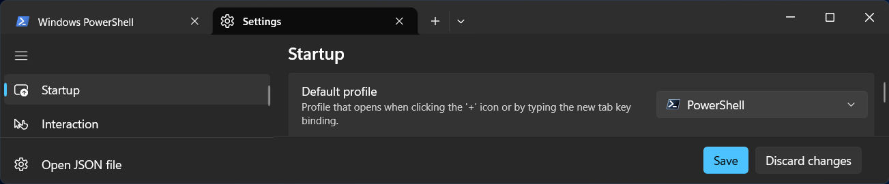

Getting Started
Source code for the hands-on sessions is available in Fortran and Python. The following environment is required to run the programs.
Fortran
Prepare a Fortran compiler such as gfortran. The distributed code compiles and runs with gfortran-15.2.0. For matrix multiplication, the intrinsic procedure matmul is used. To compute a matrix inverse, a linear algebra library is required. Although OpenBLAS may be installed, LAPACK in Rtools is used on Windows and Accelerate.framework is used on macOS.
To visualize data produced with the Fortran programs, a graphics package is required. R scripts are included in the hands-on distribution.
Python
Python is a general-purpose programming language that relies on libraries to extend its functionality. Numpy provides mathematical functions and matrix manipulation, while Matplotlib is a standard visualization package. The hands-on distribtuion was prepared using Python 3.14.7.
Participants unfamiliar with a terminal or editor may install Jupyter (see Windows, Mac) that allows to write and execute code directly in a web browser.
Google Colaboratory
Google Colaboratory is a cloud service with a free tier available to anyone a Google account. Note that the free version has stricter computational resource limits, and a stable network connection is required.
By default, Colab runs Python on CPU, but it can be changed to GPU or switched to R or Julia.
Terminal
On Windows 11, Windows Terminal is the default terminal emulator instead of cmd.exe. If it is not installed, search for and install in Microsoft Store.
Terminal.app on Mac is located in /Applications/Utilities or under ``Others’’ in LaunchPad.
Windows
On Windows, winget enables quick setup.
PowerShell 7 is used instead of Windows PowerShell (which is installed by default). To install PowerShell, search for terminal in the Start Menu and pin it to the Taskbar. Run the following command to install PowerShell 7;
winget install Microsoft.PowerShellThe profile for PowerShell 7 is created automatically, but you need to configure Windows Terminal to open PowerShell 7 by default. Click the downward arrow in the title bar and select Settings (or press Ctrl+,). Under Default Profile in the Startup settings, select PowerShell (represented by a black icon, not blue) and click Save in the lower-right corner.

Install Python
(Not needed if you are only using Fortran)
winget install Python.Python.3.14In a new tab of Terminal, the path to python is automatically added. To exit Python, type quit().
PowerShell 7.6.4
python
Python 3.14.7 (tags/v3.14.7:823f032, Aug 5 2026, 10:51:32) [MSC v.1944 64 bit (AMD64)] on win32
Type "help", "copyright", "credits" or "license" for more information.
>>> quit()Install Numpy and Matplotlib with pip.
pip install numpy matplotlibInstall Jupyter
Install Jupyter if needed.
pip install jupyterWhen Jupyter Notebook launches, your default browser will open automatically. The browser will display the current directory of your terminal. You can use cd to navigate to a different directory before launching Jupyter:
jupyter notebookInstall an editor
To write source code, install your preferred code editor (pick just one):
winget install Microsoft.Edit
winget install Neovim.Neovim
winget install GNU.Emacs
winget install Microsoft.VisualStudioCodeFor those who have never used a text editor before, Microsoft.Edit is recommended. The tutorial for Neovim can be launched by typing :Tutor. The Emacs tutorial can be accessed by moving the cursor to Emacs Tutorial and pressing Enter.
Install gfortran and R
R scripts are provided to visualize data produced by the Fortran binaries. R is not needed if you use other visualizaton tools. However, RTools provides a convenient way to install gfortran and LAPCK because it includes MinGW-w64, as recommended by Numpy Build from source guide.
winget install RProject.R
winget install RProject.RtoolsTo configure environment paths, edit your profile at Documents\PowerShell\Microsoft.PowerShell_profile.ps1 (or OneDrive\Documents... if your account uses OneDrive.) Create the PowerShell folder first if it does not already exist.
edit $profile- 1
-
In PowerShell
Ris an alias used to recall previous commands. Removing this alias avoids name conflicts, allowing you to runRdirectly instead of typingR.exe. - 2
-
Path to
R.exe. - 3
-
Path to
make. - 4
-
Path to
gfortran. Note thatx86_w64-mingw32.static.posixdepends on the platform and differ on ARM64 architectures.
Open a new terminal tab to verify gfortran installation.
gfortran --versionMac
For the hands-on sessions, the official installer from python.org can be used. Install Numpy and Matplotlib, and (optionally) Jupyter using pip.
For Fortran users, follow the instructions below to install gfortran and R using MacPorts.
Install MacPorts
MacPorts is preferred over Homebrew because it provide a more robust and consistent environment. The default install directory for MacPorts is /opt/local.
Follow Installing MacPorts.
Update macOS and use the .pkg installer for the your OS version. The installer append /opt/local/bin to the PATH in .zshrc.
- Install Apple’s Command Line Developer Tools.
sudo xcode-select --install- (Optional) Install Xcode from App Store and accept the license agreement:
sudo xcodebuild -license- (Optional) Install
xorg-serverto use X11:
sudo port install xorg-serverSee man port or documentation for further details.
Install gfortran and R
gfortran is included as part of gcc package:
sudo port install gcc15To allow multiple versions of gcc to coexist, the compiler binary is named gfortran-mp-15 to include the major version number. Run the following command:
sudo port select gcc mp-gcc15This sets gcc15 as the default and creates a gfortran alias (pointing /opt/local/bin/gfortran-mp-15.
For visualization, install R:
sudo port install RInstall Python
To install Python via MacPorts instead of the official installer, run the command below. (Python is not required if you are only running the Fortran hands-on.) To allow multiple versions to coexist, MacPorts appends version numbers to package names (e.g., py314-numpy).
python314 is installed in /opt/local/Library/Frameworks/Python.framework/Versions/3.14.
sudo port install python314As indicated in the install messages, use select subcommand to set the active Python version.
sudo port select python python314Next, install Numpy and Matplotlib.
sudo port install py314-numpy py314-matplotlib(Note: python314 will automatically be installed as a dependency if it was not installed previously.)
Install Jupyter
Jupyter can also be installed via MacPorts.
sudo port install py314-jupyter